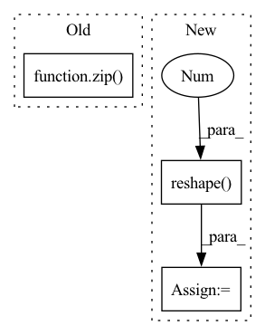

Pattern ID :33313

Before Change
batch_boxes = []
batch_classes = []
batch_scores = []
for idx, (class_boxes, class_probs) in enumerate(zip(batch_classes_boxes, batch_classes_probs)):
if class_probs[:, -1].max() > 0.5:
batch_classes.append(idx + 1)
batch_scores.append(class_probs[:, -1].max().detach().cpu().numpy())
After Change
bs, *_ = out["pred_logits"].shape
// Get probabilities from output logits and select query with highest prob
pred_probs = out["pred_logits"].sigmoid().squeeze().reshape(bs, 20, 27)
pred_boxes = out["pred_boxes"].reshape(bs, 20, 27, -1)
pred_query_ids = pred_probs.argmax(dim=-1)
// Adjust format to fit metric
boxes = []
In pattern: SUPERPATTERN
Frequency: 4
Non-data size: 3
Instances
Fragment ID: 96040463
Project Name: bwittmann/transoar
Commit Name: 09f57bf9bd1146b57db0cce80a0901defe5e5d63
Time: 2022-02-15
Author: bastian.wittmann@tum.de
File Name: transoar/inference.py
M Class Name: AnonimousClass
N Class Name: AnonimousClass
M Method Name: inference(2)
N Method Name: inference(2)
M Parent Class:
N Parent Class:
M File Name: transoar/inference.py
N File Name: transoar/inference.py
M Start Line: 9
M End Line: 36
N Start Line: 6
N End Line: 34
'>
Before Change
pooled_embeddings: List[Tensor] = []
length_per_key: List[int] = []
feature_dict = features.to_dict()
for emb_config, emb_module in zip(
self._embedding_bag_configs, self.embedding_bags
):
for feature_name in emb_config.feature_names:
f = feature_dict[feature_name]
values = f.values()
After Change
)
)
embeddings = torch.stack(embeddings).reshape(-1, self._sum_length_per_key)
return KeyedTensor(
keys=self._embedding_names,
values=embeddings,
'>
Fragment ID: 96040462
Project Name: pytorch/torchrec
Commit Name: d9684a137833d05f9a42e9d7f52f908d0a0dcede
Time: 2022-06-28
Author: yingliufb@fb.com
File Name: torchrec/quant/embedding_modules.py
M Class Name: EmbeddingBagCollection
N Class Name: EmbeddingBagCollection
M Method Name: forward(2)
N Method Name: forward(2)
M Parent Class: EmbeddingBagCollectionInterface
N Parent Class: EmbeddingBagCollectionInterface
M File Name: torchrec/quant/embedding_modules.py
N File Name: torchrec/quant/embedding_modules.py
M Start Line: 230
M End Line: 250
N Start Line: 257
N End Line: 293
'>
Before Change
assert "pred_boxes" in outputs
idx = self._get_src_permutation_idx(indices)
src_boxes = outputs["pred_boxes"][idx]
target_boxes = torch.cat([t["boxes"][i] for t, (_, i) in zip(targets, indices)], dim=0)
loss_bbox = F.l1_loss(src_boxes, target_boxes, reduction="none")
After Change
def loss_bboxes(self, outputs, targets, matches, num_boxes, matches_per_class=1):
assert "pred_boxes" in outputs
bs = outputs["pred_boxes"].shape[0]
box_preds = outputs["pred_boxes"].reshape(bs, 20, 27, -1)
box_labels = [target["boxes"] for target in targets] // can have different shapes
// Get matched pred boxes
match_ids = matches.nonzero().T.unbind()
matched_box_preds = box_preds[match_ids]
matched_box_labels = torch.cat([torch.repeat_interleave(labels, matches_per_class, dim=0) for labels in box_labels]) // TODO: make smarter choices
// Determine bbox losses
'>
Fragment ID: 96040465
Project Name: bwittmann/transoar
Commit Name: 50cc4661dc99397fe437a829cff6659bfd58eaba
Time: 2022-04-19
Author: bastian.wittmann@tum.de
File Name: transoar/models/criterion.py
M Class Name: TransoarCriterion
N Class Name: TransoarCriterion
M Method Name: loss_bboxes(6)
N Method Name: loss_bboxes(5)
M Parent Class: nn.Module
N Parent Class: nn.Module
M File Name: transoar/models/criterion.py
N File Name: transoar/models/criterion.py
M Start Line: 64
M End Line: 76
N Start Line: 52
N End Line: 71